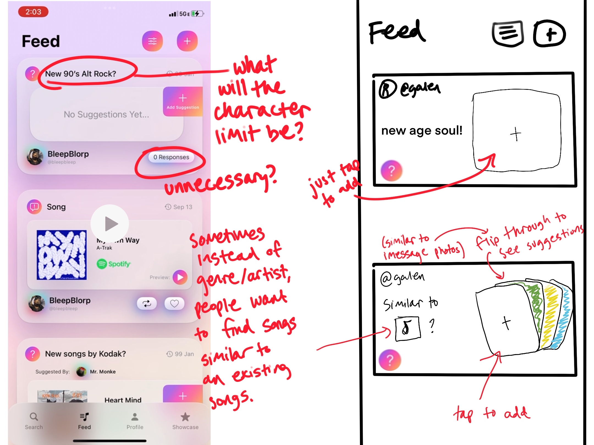
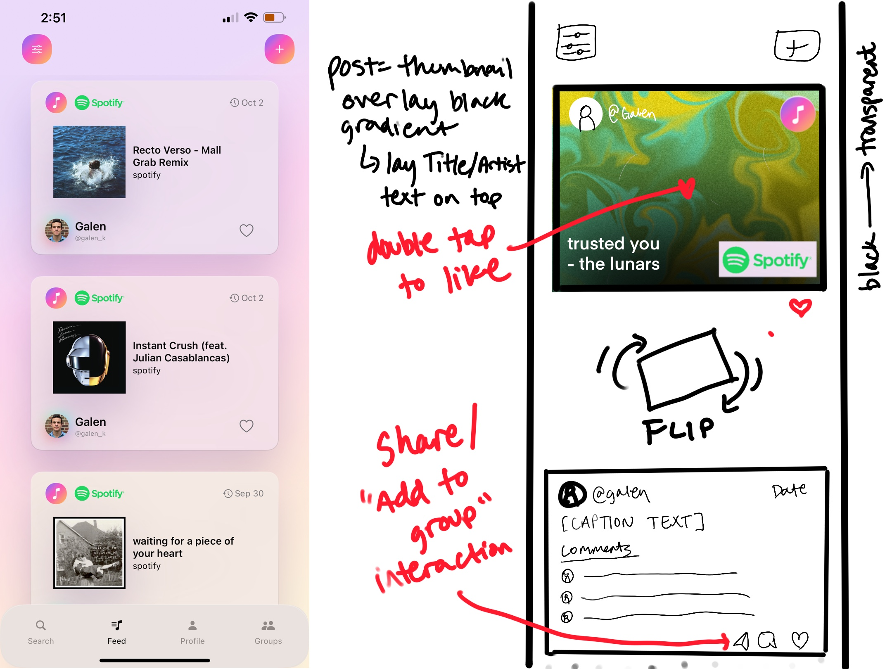
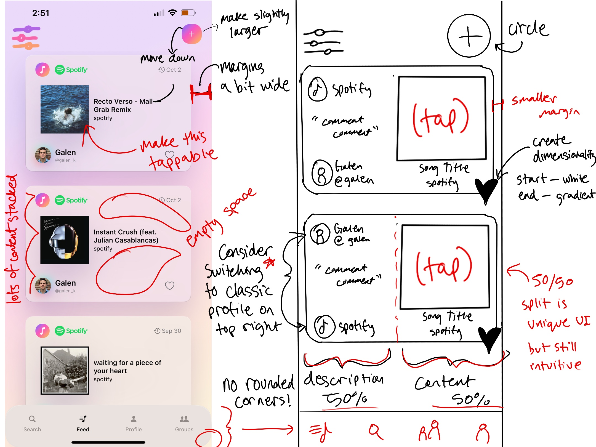
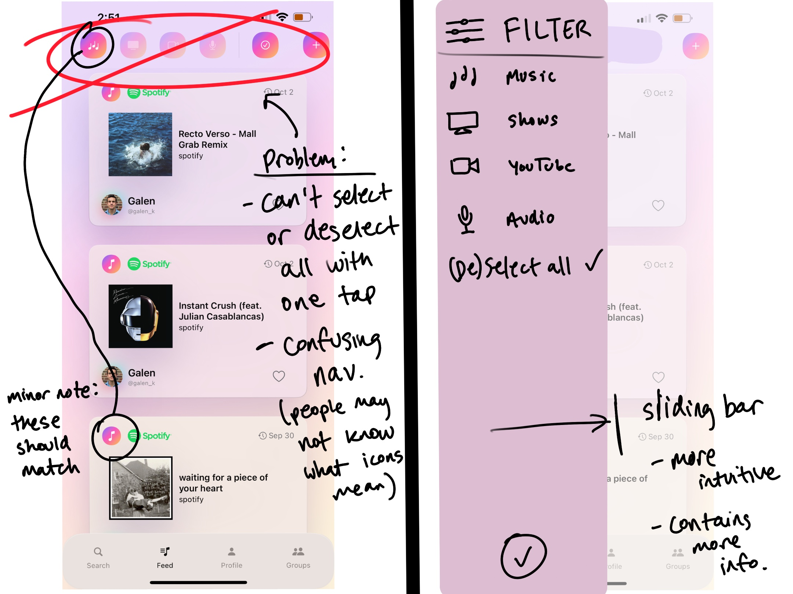
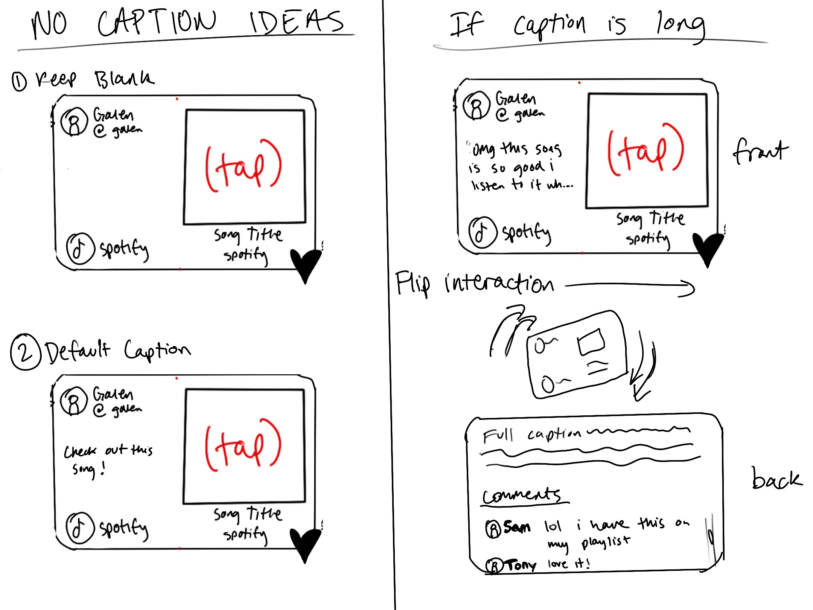

Tools: Figma, Procreate
I consulted on UX improvements for Aux, a startup developing a social media platform for sharing music, videos, and podcasts - think Twitter, but for media content. The founders wanted to streamline their user experience, so I began by sketching out recommendations for key interaction flows.
These initial sketches helped us explore different approaches to common user actions like sharing media, interacting with posts, and navigating content feeds. From there, I moved to Figma to create high-fidelity prototypes that brought these concepts to life, allowing us to test and refine the proposed solutions.





The high-fidelity prototypes allowed us to visualize the complete user experience and test interaction patterns. This Figma prototype demonstrates the proposed navigation structure and content sharing workflows for the social media platform.
While this company did not end up taking off, this experience highlights the early days of my design career, when I was discovering and molding my own process and tools. I lacked a formal research and reference-collecting process, instead opting for unconventional and personally interesting UX styles. I stuck mostly to low fidelity wireframes sketched on Procreate for quick, iterative ideas.
While I believe there is value to experimental UX thinking, I now understand the value of accessible, familiar, and logical interfaces as well. My ideal project would allow me to strike a balance between the two.